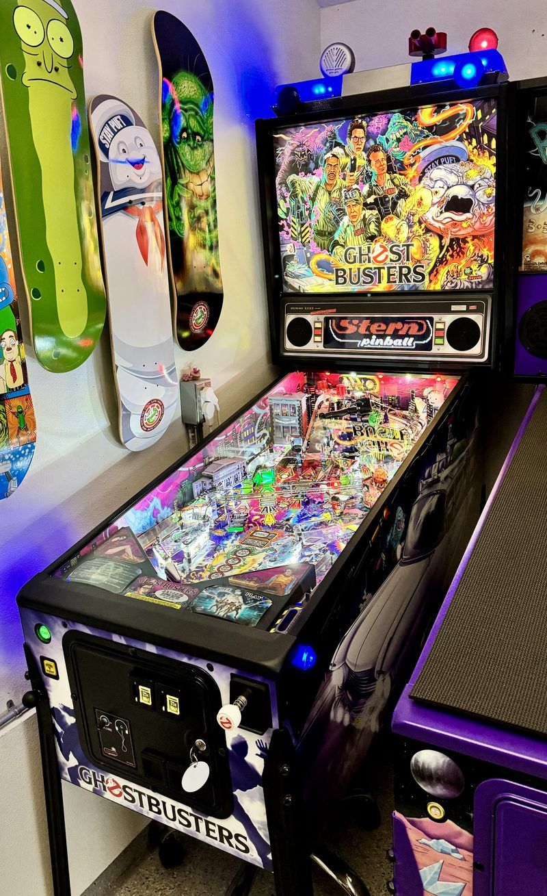

Ghostbusters Premium
Who you gonna call when the magna-slings throw the ball somewhere unfair? Nobody. That's the game.
Stern's Ghostbusters arrived in 2016 with a reputation that formed almost immediately: this machine is mean. The Premium and LE editions carry magnetic slingshots — magna-slings — which grab the ball mid-flight and fling it somewhere you were not expecting and could not have prepared for.
Players complained. They are still complaining. They are also still playing it, because underneath the unfairness is a genuinely fast machine with one of the best-looking playfields Stern has produced, drenched in Zombie Yeti's artwork and lit like a nightclub.


The magna-slings
The honest defense of them is this: pinball is a game about controlling chaos, and a machine that occasionally refuses to be controlled is not broken, it is committed. The honest complaint is that they can end a good ball for no reason you could have played around. Both are true, and it is still on free play.
Work log
Shopped out and then fitted with every OEM accessory Stern made for this title — the complete catalog.
- Full shop-out — Stripped, cleaned and rebuilt.
- Spike 1 CPU board replaced — OEM Stern board, 2023.
- OEM Stern topper
- OEM Stern shaker motor
- OEM Stern shooter rod
- OEM Stern side rails — In black.
- OEM Stern inner side blades
- OEM Stern headphone jack kit
- OEM Stern banner
Complete is the hard part. The accessories were expensive when the machine was new, so most owners passed on them; by the time the title turned collectible, the only supply was the small number sold back then. The black side rails, the topper and the shooter rod almost never surface — and when they do, they are usually on a machine whose owner is not selling.
Stern
2016. Premium edition.
Magna-slings
Magnetic slingshots. Divisive by design.
Free play
In the pinball row.
Ghostbusters sits in the pinball row with Indiana Jones, Total Nuclear Annihilation and Rick and Morty. See the row →